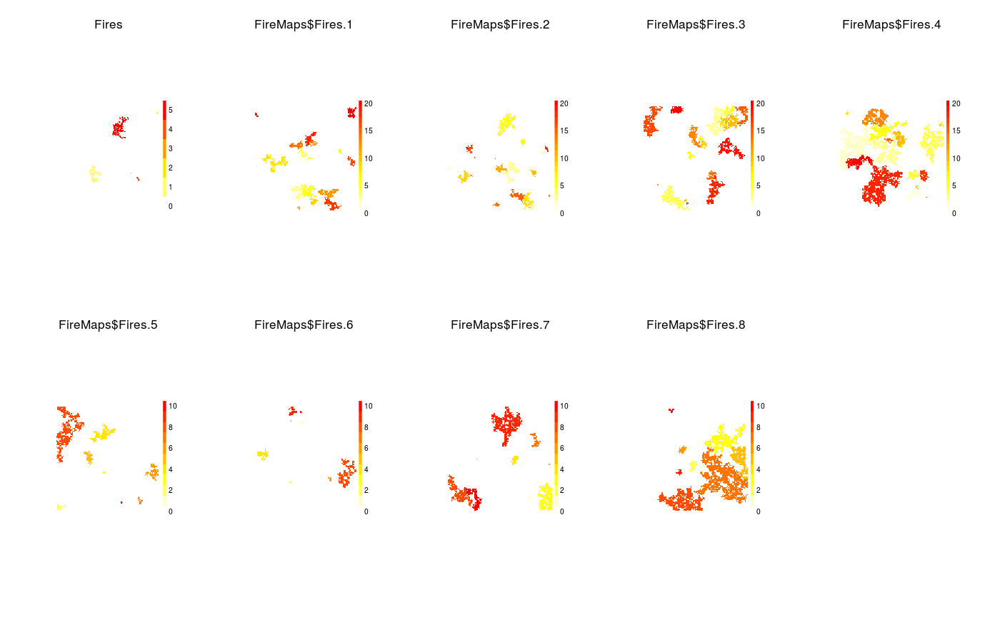
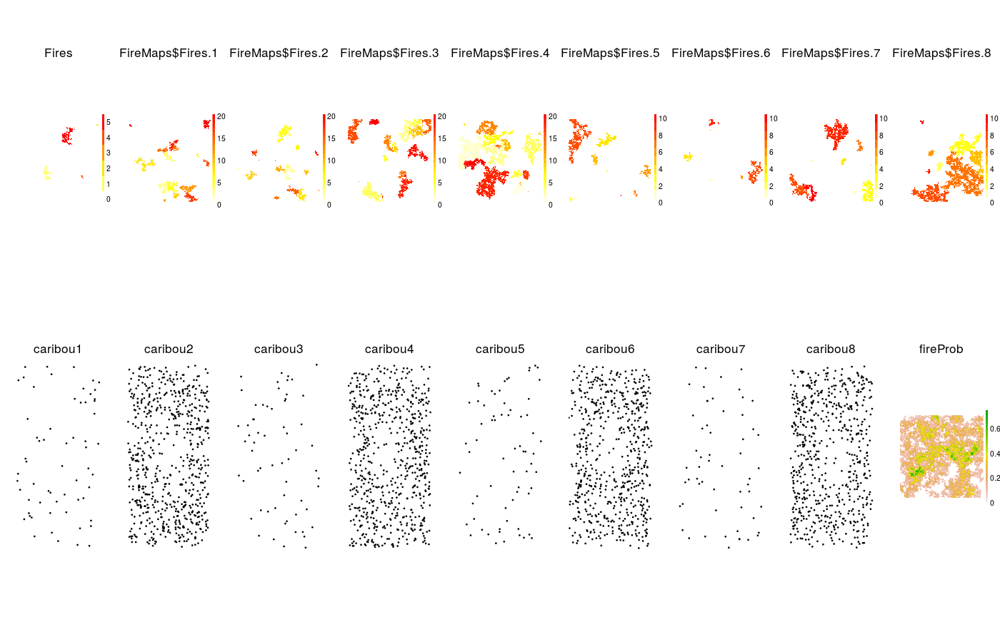

spadesThis is essentially a wrapper around the spades call that allows for
multiple calls to spades. This function will use a single processor,
or multiple processors if beginCluster has been run
first or a cluster object is passed in the cl argument (gives more control to user).
experiment(sim, replicates = 1, params, modules, objects = list(), inputs, dirPrefix = "simNum", substrLength = 3, saveExperiment = TRUE, experimentFile = "experiment.RData", clearSimEnv = FALSE, notOlderThan, cl, ...) # S4 method for simList experiment(sim, replicates = 1, params, modules, objects = list(), inputs, dirPrefix = "simNum", substrLength = 3, saveExperiment = TRUE, experimentFile = "experiment.RData", clearSimEnv = FALSE, notOlderThan, cl, ...)
| sim | A |
|---|---|
| replicates | The number of replicates to run of the same |
| params | Like for |
| modules | Like for |
| objects | Like for |
| inputs | Like for |
| dirPrefix | String vector. This will be concatenated as a prefix on the directory names. See details and examples. |
| substrLength | Numeric. While making |
| saveExperiment | Logical. Should params, modules, inputs, sim, and resulting
experimental design be saved to a file. If TRUE are saved to a single list
called |
| experimentFile | String. Filename if |
| clearSimEnv | Logical. If TRUE, then the envir(sim) of each simList in the return list is emptied. This is to reduce RAM load of large return object. Default FALSE. |
| notOlderThan | Date or time. Passed to |
| cl | A cluster object. Optional. This would generally be created using
parallel::makeCluster or equivalent. This is an alternative way, instead
of |
| ... | Passed to |
Invisibly returns a list of the resulting simList objects from the fully
factorial experiment. This list has an attribute, which a list with 2 elements:
the experimental design provided in a wide data.frame and the experiment values
in a long data.frame. There is also a file saved with these two data.frames.
It is named whatever is passed into experimentFile.
Since returned list of simList objects may be large, the user is not obliged to
return this object (as it is returned invisibly).
Clearly, there may be objects saved during simulations. This would be determined as per a
normal spades call, using outputs like, say, outputs(sims[[1]]).
Generally, there are 2 reasons to do this: replication and varying simulation inputs
to accomplish some sort of simulation experiment. This function deals with both of these
cases. In the case of varying inputs, this function will attempt to create a fully
factorial experiment among all levels of the variables passed into the function.
If all combinations do not make sense, e.g., if parameters and modules are varied,
and some of the parameters don't exist in all combinations of modules, then the function
will do an "all meaningful combinations" factorial experiment. Likewise, fully factorial
combinations of parameters and inputs may not be the desired behaviour. The function
requires a simList object, acting as the basis for the experiment,
plus optional inputs and/or objects and/or params and/or modules and/or replications.
This function requires a complete simList: this simList will form the basis of
the modifications as passed by params, modules, inputs, and objects.
All params, modules, inputs or objects passed into this function will override
the corresponding params, modules, inputs, or identically named objects that
are in the sim argument.
This function is parallel aware, using the same mechanism as used in the raster
package. Specifically, if you start a cluster using beginCluster, then
this experiment function will automatically use that cluster. It is always a good
idea to stop the cluster when finished, using endCluster.
Here are generic examples of how params, modules, objects,
and inputs should be structured.
params = list(moduleName = list(paramName = list(val1, val2))).
modules = list(c("module1","module2"), c("module1","module3"))
objects = list(objName = list(object1=object1, object2=object2))
inputs = list(
data.frame(file = pathToFile1, loadTime = 0, objectName = "landscape",
stringsAsFactors = FALSE),
data.frame(file = pathToFile2, loadTime = 0, objectName = "landscape",
stringsAsFactors = FALSE)
)
Output directories are changed using this function: this is one of the dominant
side effects of this function. If there are only replications, then a set of
subdirectories will be created, one for each replicate.
If there are varying parameters and or modules, outputPath is updated
to include a subdirectory for each level of the experiment.
These are not nested, i.e., even if there are nested factors, all subdirectories
due to the experimental setup will be at the same level.
Replicates will be one level below this.
The subdirectory names will include the module(s), parameter names, the parameter values,
and input index number (i.e., which row of the inputs data.frame).
The default rule for naming is a concatenation of:
1. The experiment level (arbitrarily starting at 1). This is padded with zeros if there are many experiment levels.
2. The module, parameter name and parameter experiment level (not the parameter value, as values could be complex), for each parameter that is varying.
3. The module set.
4. The input index number
5. Individual identifiers are separated by a dash.
6. Module - Parameter - Parameter index triplets are separated by underscore.
e.g., a folder called: 01-fir_spr_1-car_N_1-inp_1 would be the first
experiment level (01), the first parameter value for the spr* parameter
of the fir* module, the first parameter value of the N parameter of the
car* module, and the first input dataset provided.
This subdirectory name could be long if there are many dimensions to the experiment.
The parameter substrLength determines the level of truncation of the
parameter, module and input names for these subdirectories.
For example, the resulting directory name for changes to the spreadprob
parameter in the fireSpread module and the N parameter in the
caribouMovement module would be:
1_fir_spr_1-car_N_1 if substrLength is 3, the default.
Replication is treated slightly differently. outputPath is always 1 level below the
experiment level for a replicate.
If the call to experiment is not a factorial experiment (i.e., it is just
replication), then the
default is to put the replicate subdirectories at the top level of outputPath.
To force this one level down, dirPrefix can be used or a manual change to
outputPath before the call to experiment.
dirPrefix can be used to give custom names to directories for outputs.
There is a special value, "simNum", that is used as default, which is
an arbitrary number associated with the experiment.
This corresponds to the row number in the attr(sims, "experiment").
This "simNum" can be used with other strings, such as
dirPrefix = c("expt", "simNum").
The experiment structure is kept in two places: the return object has an attribute,
and a file named experiment.RData (see argument experimentFile)
located in outputPath(sim).
substrLength, if 0, will eliminate the subdirectory naming
convention and use only dirPrefix.
If cache = TRUE is passed, then this will pass this to spades,
with the additional argument replicate = x, where x is the replicate number.
That means that if a user runs experiment with replicate = 4 and
cache = TRUE, then SpaDES will run 4 replicates, caching the results,
including replicate = 1, replicate = 2, replicate = 3, and replicate = 4.
Thus, if a second call to experiment with the exact same simList is passed,
and replicates = 6, the first 4 will be taken from the cached copies,
and replicate 5 and 6 will be run (and cached) as normal.
If notOlderThan used with a time that is more recent than the cached copy,
then a new spades will be done, and the cached copy will be deleted from the
cache repository, so there will only ever be one copy of a particular replicate
for a particular simList.
NOTE: caching may not work as desired on a Windows machine because the sqlite
database can only be written to one at a time, so there may be collisions.
if (interactive()) { library(igraph) # use %>% in a few examples library(raster) tmpdir <- file.path(tempdir(), "examples") # Create a default simList object for use through these examples mySim <- simInit( times = list(start = 0.0, end = 2.0, timeunit = "year"), params = list( .globals = list(stackName = "landscape", burnStats = "nPixelsBurned"), # Turn off interactive plotting fireSpread = list(.plotInitialTime = NA), caribouMovement = list(.plotInitialTime = NA), randomLandscapes = list(.plotInitialTime = NA) ), modules = list("randomLandscapes", "fireSpread", "caribouMovement"), paths = list(modulePath = system.file("sampleModules", package = "SpaDES.core"), outputPath = tmpdir), # Save final state of landscape and caribou outputs = data.frame(objectName = c("landscape", "caribou"), stringsAsFactors = FALSE) ) # Example 1 - test alternative parameter values # Create an experiment - here, 2 x 2 x 2 (2 levels of 2 params in fireSpread, # and 2 levels of 1 param in caribouMovement) # Here is a list of alternative values for each parameter. They are length one # numerics here -- e.g., list(0.2, 0.23) for spreadprob in fireSpread module, # but they can be anything, as long as it is a list. experimentParams <- list(fireSpread = list(spreadprob = list(0.2, 0.23), nFires = list(20, 10)), caribouMovement = list(N = list(100, 1000))) sims <- experiment(mySim, params = experimentParams) # see experiment: attr(sims, "experiment") # Read in outputs from sims object FireMaps <- do.call(stack, lapply(1:NROW(attr(sims, "experiment")$expDesign), function(x) sims[[x]]$landscape$Fires)) if (interactive()) Plot(FireMaps, new = TRUE) # Or reload objects from files, useful if sim objects too large to store in RAM caribouMaps <- lapply(sims, function(sim) { caribou <- readRDS(outputs(sim)$file[outputs(sim)$objectName == "caribou"]) }) names(caribouMaps) <- paste0("caribou", 1:8) # Plot whole named list if (interactive()) Plot(caribouMaps, size = 0.1) # Example 2 - test alternative modules # Example of changing modules, i.e., caribou with and without fires # Create an experiment - here, 2 x 2 x 2 (2 levels of 2 params in fireSpread, # and 2 levels of 1 param in caribouMovement) experimentModules <- list( c("randomLandscapes", "fireSpread", "caribouMovement"), c("randomLandscapes", "caribouMovement")) sims <- experiment(mySim, modules = experimentModules) attr(sims, "experiment")$expVals # shows 2 alternative experiment levels # Example 3 - test alternative parameter values and modules # Note, this isn't fully factorial because all parameters are not # defined inside smaller module list sims <- experiment(mySim, modules = experimentModules, params = experimentParams) attr(sims, "experiment")$expVals # shows 10 alternative experiment levels # Example 4 - manipulate manipulate directory names - # "simNum" is special value for dirPrefix, it is converted to 1, 2, ... sims <- experiment(mySim, params = experimentParams, dirPrefix = c("expt", "simNum")) attr(sims, "experiment")$expVals # shows 8 alternative experiment levels, 24 unique # parameter values # Example 5 - doing replicate runs - sims <- experiment(mySim, replicates = 2) attr(sims, "experiment")$expDesign # shows 2 replicates of same experiment # Example 6 - doing replicate runs, but within a sub-directory sims <- experiment(mySim, replicates = 2, dirPrefix = c("expt")) lapply(sims, outputPath) # shows 2 replicates of same experiment, within a sub directory # Example 7 - doing replicate runs, of a complex, non factorial experiment. # Here we do replication, parameter variation, and module variation all together. # This creates 20 combinations. # The experiment function tries to make fully factorial, but won't # if all the levels don't make sense. Here, changing parameter values # in the fireSpread module won't affect the simulation when the fireSpread # module is not loaded: # library(raster) # beginCluster(20) # if you have multiple clusters available, use them here to save time sims <- experiment(mySim, replicates = 2, params = experimentParams, modules = experimentModules, dirPrefix = c("expt", "simNum")) # endCluster() # end the clusters attr(sims, "experiment") # Example 8 - Use replication to build a probability map. # For this to be meaningful, we need to provide a fixed input landscape, # not a randomLandscape for each experiment level. So requires 2 steps. # Step 1 - run randomLandscapes module twice to get 2 randomly # generated landscape maps. We will use 1 right away, and we will # use the two further below mySimRL <- simInit( times = list(start = 0.0, end = 0.1, timeunit = "year"), params = list( .globals = list(stackName = "landscape"), # Turn off interactive plotting randomLandscapes = list(.plotInitialTime = NA) ), modules = list("randomLandscapes"), paths = list(modulePath = system.file("sampleModules", package = "SpaDES.core"), outputPath = file.path(tmpdir, "landscapeMaps1")), outputs = data.frame(objectName = "landscape", saveTime = 0, stringsAsFactors = FALSE) ) # Run it twice to get two copies of the randomly generated landscape mySimRLOut <- experiment(mySimRL, replicate = 2) # extract one of the random landscapes, which will be passed into next as an object landscape <- mySimRLOut[[1]]$landscape # here we don't run the randomLandscapes module; instead we pass in a landscape # as an object, i.e., a fixed input mySimNoRL <- simInit( times = list(start = 0.0, end = 1, timeunit = "year"), # only 1 year to save time params = list( .globals = list(stackName = "landscape", burnStats = "nPixelsBurned"), # Turn off interactive plotting fireSpread = list(.plotInitialTime = NA), caribouMovement = list(.plotInitialTime = NA) ), modules = list("fireSpread", "caribouMovement"), # No randomLandscapes modules paths = list(modulePath = system.file("sampleModules", package = "SpaDES.core"), outputPath = tmpdir), objects = c("landscape"), # Pass in the object here # Save final state (the default if saveTime is not specified) of landscape and caribou outputs = data.frame(objectName = c("landscape", "caribou"), stringsAsFactors = FALSE) ) # Put outputs into a specific folder to keep them easy to find outputPath(mySimNoRL) <- file.path(tmpdir, "example8") sims <- experiment(mySimNoRL, replicates = 8) # Run experiment attr(sims, "experiment") # shows the experiment, which in this case is just replicates # list all files that were saved called 'landscape' landscapeFiles <- dir(outputPath(mySimNoRL), recursive = TRUE, pattern = "landscape", full.names = TRUE) # Can read in Fires layers from disk since they were saved, or from the sims # object # Fires <- lapply(sims, function(x) x$landscape$Fires) %>% stack Fires <- lapply(landscapeFiles, function(x) readRDS(x)$Fires) %>% stack() Fires[Fires > 0] <- 1 # convert to 1s and 0s fireProb <- sum(Fires) / nlayers(Fires) # sum them and convert to probability if (interactive()) Plot(fireProb, new = TRUE) # Example 9 - Pass in inputs, i.e., input data objects taken from disk # Here, we, again, don't provide randomLandscapes module, so we need to # provide an input stack called lanscape. We point to the 2 that we have # saved to disk in Example 8 mySimInputs <- simInit( times = list(start = 0.0, end = 2.0, timeunit = "year"), params = list( .globals = list(stackName = "landscape", burnStats = "nPixelsBurned"), # Turn off interactive plotting fireSpread = list(.plotInitialTime = NA), caribouMovement = list(.plotInitialTime = NA) ), modules = list("fireSpread", "caribouMovement"), paths = list(modulePath = system.file("sampleModules", package = "SpaDES.core"), outputPath = tmpdir), # Save final state of landscape and caribou outputs = data.frame(objectName = c("landscape", "caribou"), stringsAsFactors = FALSE) ) landscapeFiles <- dir(tmpdir, pattern = "landscape_year0", recursive = TRUE, full.names = TRUE) # Varying inputs files - This could be combined with params, modules, replicates also outputPath(mySimInputs) <- file.path(tmpdir, "example9") sims <- experiment(mySimInputs, inputs = lapply(landscapeFiles, function(filenames) { data.frame(file = filenames, loadTime = 0, objectName = "landscape", stringsAsFactors = FALSE) }) ) # load in experimental design object experiment <- load(file = file.path(tmpdir, "example9", "experiment.RData")) %>% get() print(experiment) # shows input files and details # Example 10 - Use a very simple output dir name using substrLength = 0, # i.e., just the simNum is used for outputPath of each spades call outputPath(mySim) <- file.path(tmpdir, "example10") sims <- experiment(mySim, modules = experimentModules, replicates = 2, substrLength = 0) lapply(sims, outputPath) # shows that the path is just the simNum experiment <- load(file = file.path(tmpdir, "example10", "experiment.RData")) %>% get() print(experiment) # shows input files and details # Example 11 - use clearSimEnv = TRUE to remove objects from simList # This will shrink size of return object, which may be useful because the # return from experiment function may be a large object (it is a list of # simLists). To see size of a simList, you have to look at the objects # contained in the envir(simList). These can be obtained via objs(sim) sapply(sims, function(x) object.size(objs(x))) %>% sum + object.size(sims) # around 3 MB # rerun with clearSimEnv = TRUE sims <- experiment(mySim, modules = experimentModules, replicates = 2, substrLength = 0, clearSimEnv = TRUE) sapply(sims, function(x) object.size(objs(x))) %>% sum + object.size(sims) # around 250 kB, i.e., all the simList contents except the objects. # Example 12 - pass in objects experimentObj <- list(landscape = lapply(landscapeFiles, readRDS) %>% setNames(paste0("landscape", 1:2))) # Pass in this list of landscape objects sims <- experiment(mySimNoRL, objects = experimentObj) # Remove all temp files unlink(tmpdir, recursive = TRUE) }#>#>#>#>#>#>#>#>#>#>#>#>#>#>#>#> $expDesign #> input expLevel #> 1 1 1 #> 2 2 2 #> #> $expVals #> [1] 1 2 #>#>#>#> $expDesign #> modules expLevel replicate #> 1 1 1 1 #> 2 2 2 1 #> 3 1 1 2 #> 4 2 2 2 #> #> $expVals #> modules expLevel #> 1 randomLandscapes,fireSpread,caribouMovement 1 #> 2 randomLandscapes,caribouMovement 2 #> 3 randomLandscapes,fireSpread,caribouMovement 1 #> 4 randomLandscapes,caribouMovement 2 #>#>#>